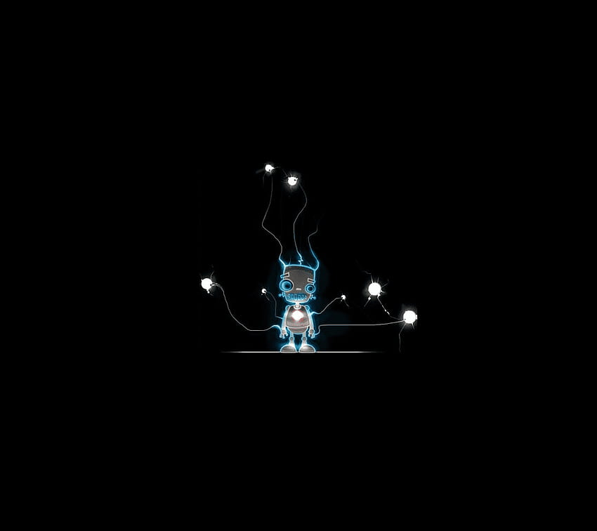

Hi, I am Shalini Jaiswal
And I am a Web Developer

Experience With

HTML Developer
Hello, I am Shalini Jaiswal i'm a fronted development and basic skill bout the backend develop. I work with the HTMl,CSS and javascrit.

HTML Developer
Hello, I am Shalini Jaiswal and i practice the code on hackerrank like C,C++ or other programming language and making the project on it also related to developer.

HTML Developer
Hello, I am Shalini Jaiswal and i have a repositiory on GitHub.

HTML Developer
Hello, I am Shalini Jaiswal i have a an acount on linkdin for finding the job releted to our choice field.
HTML Developer
Hello, I am Shalini Jaiswal nice to meet to all i am very glad to thanks you all see my
Portfolio which i maked by own sef

HTML Developer
Hello, I am Shalini Jaiswal and i practice the code on leetcode like C,C++ or other programming language their is more problem that we can solve.

HTML Developer
Hello, I am Shalini Jaiswal nice to meet to all i am very glad to thanks you all see my
Portfolio which i maked by own sef